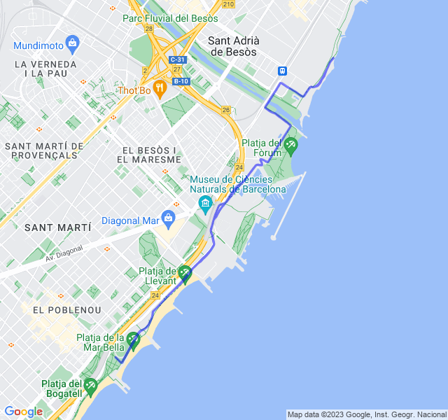
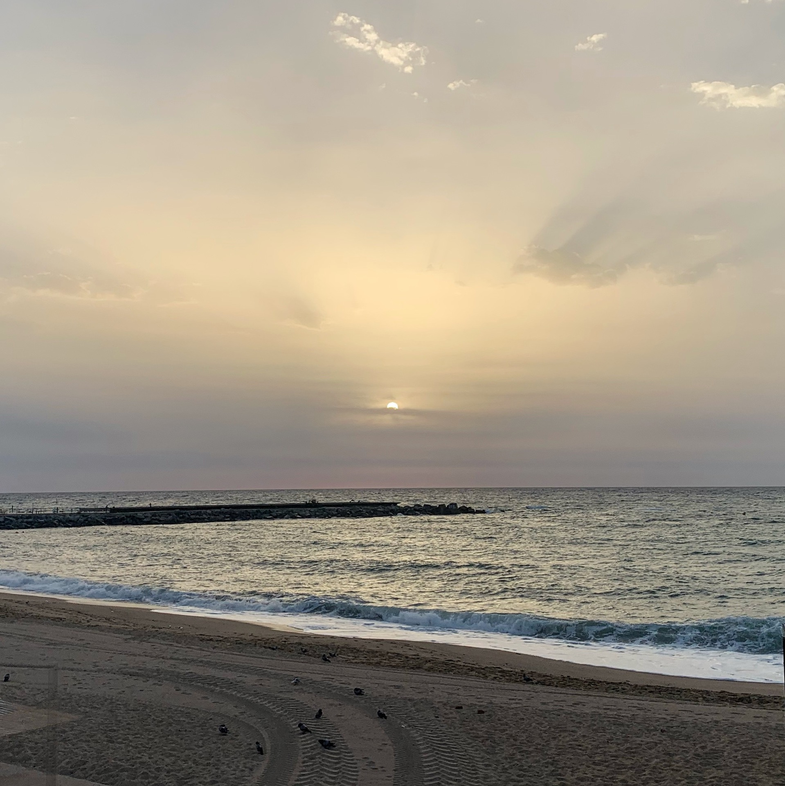
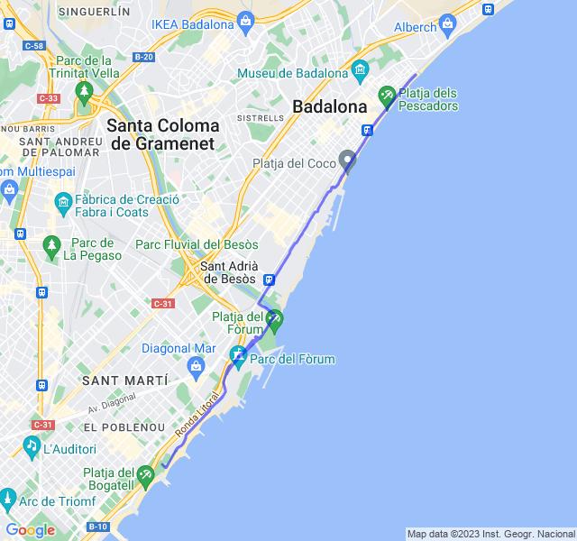
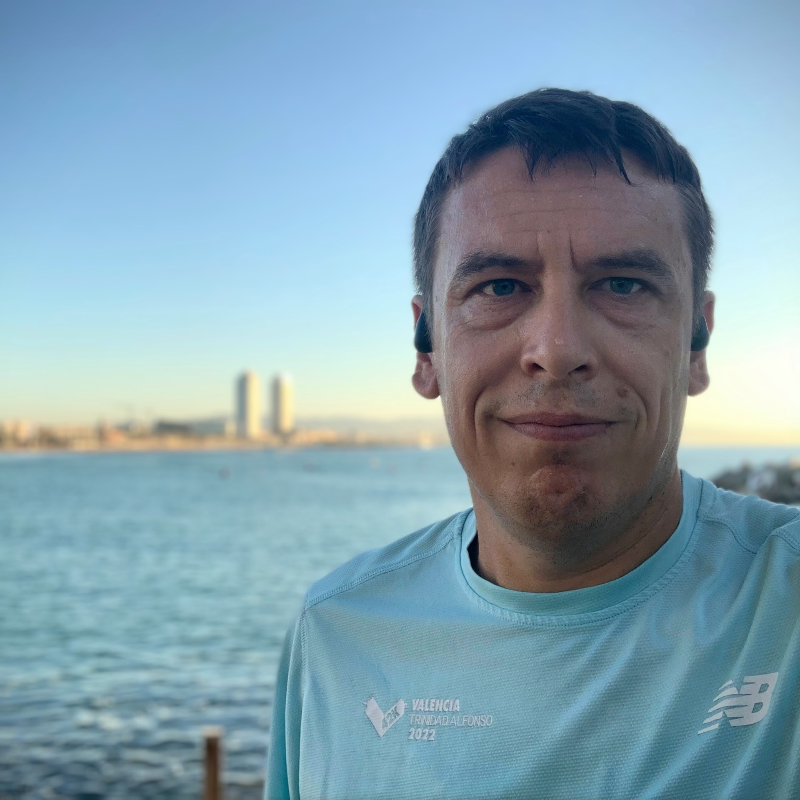
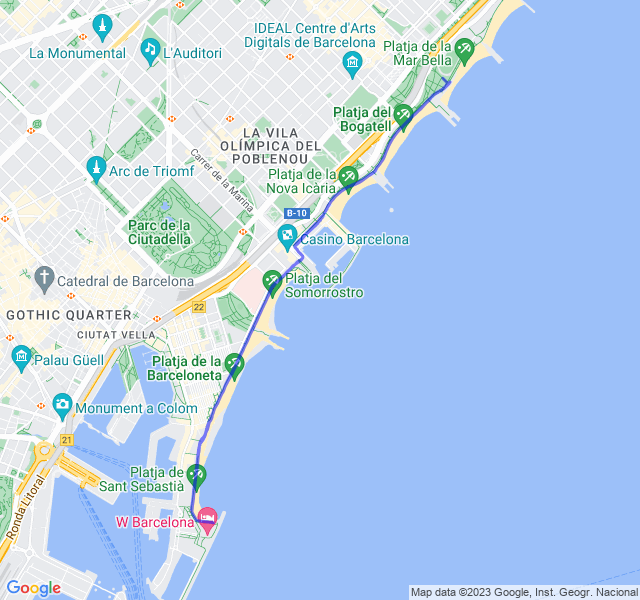
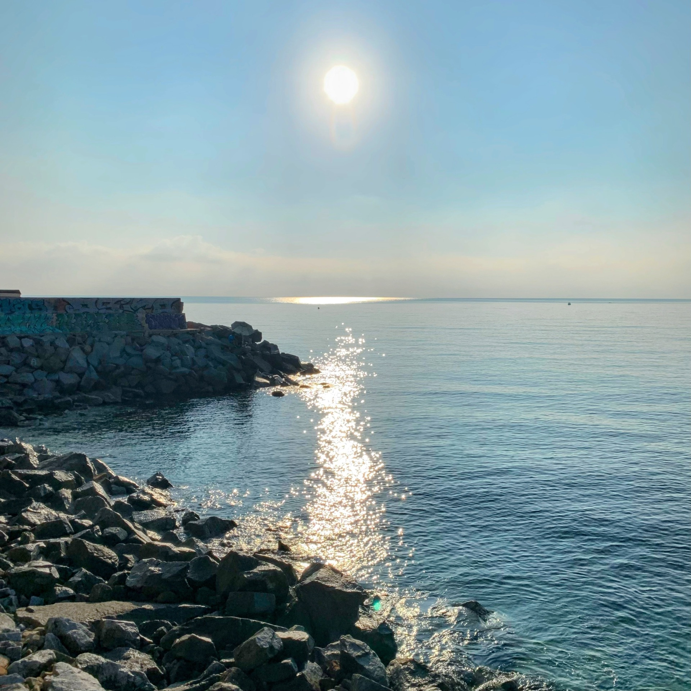
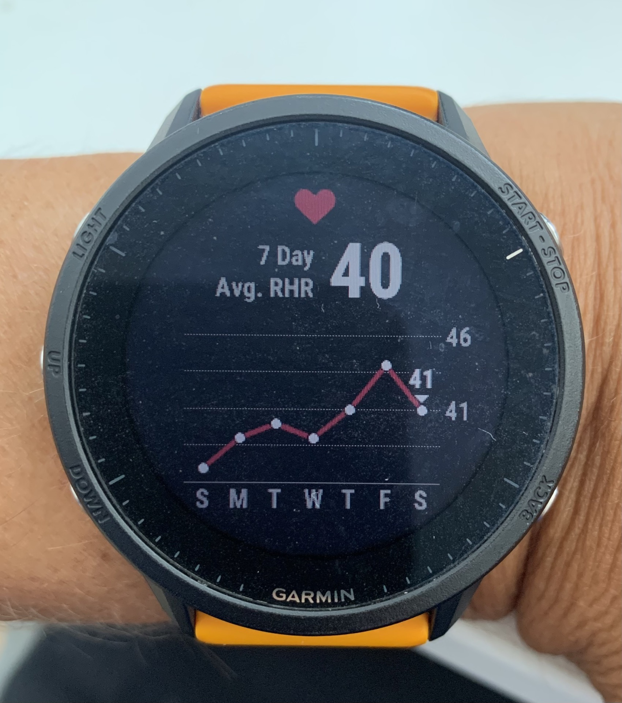
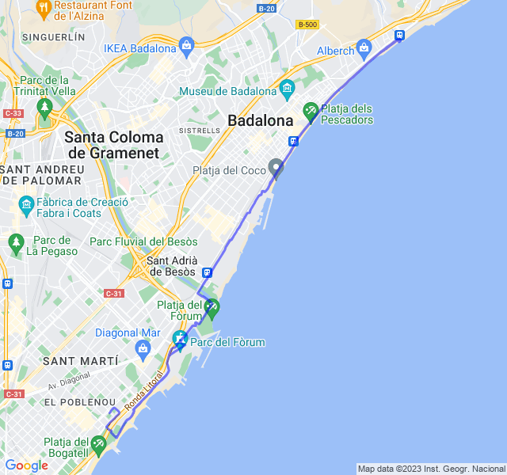

Settimana 36
Prima settimana piena dopo la ripresa dall'infortunio. Sembra tutto rientrato.
Prima uscita
10km in Z2: dopo la pausa per il ginocchio oggi gambe belle riposate. Son rimasto stupito di come la FC sia rimasta bassa nonostante il passo più svelto delle ultime settimane.

Seconda uscita
8x1000 Z3: recupero dell'allenamento saltato settimana scorsa per il problema al ginocchio. Mi pare andato abbastanza bene senza particolare fatica.


Terza uscita
8km z1, c'era un po' troppa Z2 in questa Z1 ma quando dormo poco purtroppo viene così 😐. In generale però una buona uscita.


Quarta uscita
4x3000 ritmo ~mortale~ medio! Allenamento andato abbastanza bene ma non come mi immaginavo. Ho sofferto parecchio già dalla prima ripetuta con un quadricipite che bruciava un po' nonostante il ritmo non avrebbe dovuto essere così impegnativo.

Ho fatto 3 soste, in tutto credo un minuto, per bere, prendere un gel e fare una foto. Fare questi allenamenti a digiuno non so se sia il massimo (magari è utile anche questo in ottica allenamento); ne parlo anche con Marco.

Poi è qualche giorno che non sono in formissima e per me un buon predittore è la frequenza cardiaca a riposo che, come si vede, negli ultimi giorni è aumentata un po'. Comunque un bel 20km portati a casa! Buone corse e buon weekend a tutti! 🏃🏻♂️💪🏻
